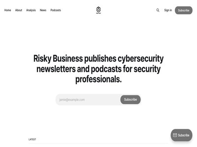
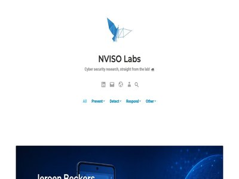

November 19, 2026 · 4 articles

ISC Stormcast For Thursday, November 19th, 2026 (Thu, Nov 19th)
November 19, 2026
(SANS ISC)
Treat Your Honeypot Analysis Like Code: Git, Pull Requests and a Human Gate for AI [Guest Diary], (Wed, Nov 18th)
November 19, 2026
[This is a Guest Diary by Kevin Truong, an ISC intern as part of the SANS.edu BACS program] (SANS ISC)

NGINX2Root (CVE-2026-123007): Frequently asked questions about five critical NGINX vulnerabilities
November 19, 2026
Frequently asked questions about five critical NGINX remote code execution vulnerabilities and five additional flaws fixed in F5’s November 18 out-of-band release. Key takeaways... (Tenable Blog)

Quantum position verification could lock remote hackers out, NIST shows
November 19, 2026
Physicists at the National Institute of Standards and Technology have used entangled photons to confirm that a party was physically where it claimed to be. NIST physicist Kriste... (Help Net Security)
November 18, 2026 · 87 articles

Step-up authentication: how to right-size authentication to risk
November 18, 2026
Not every action a user takes in an application carries the same risk. Viewing an account balance in a banking application isn’t the same as wiring several thousand dollars to a... (AWS Security Blog)

NGINX HTTP/2 Vulnerabilities: How to Identify Affected Images and Apply Security Updates
November 18, 2026
TL;DR: Two critical vulnerabilities in NGINX’s HTTP/2 implementation, CVE-2026-123633 and CVE-2026-123007, could allow unauthenticated attackers to execute code remotely on affe... (Aqua Security Blog)
Ransomware access brokers are moving their deals off public forums
November 18, 2026
Ransomware and extortion gangs claimed about 718 victims a month through October 2026, according to threat intelligence firm ZeroFox, up from roughly 573 a month in 2025. Betwee... (Help Net Security)

Ukraine, FBI arrest ransomware gang members tied to $40M in ransoms
November 18, 2026
Ukrainian authorities, working with the FBI, have arrested four suspected members of an international ransomware organization linked to more than $40.5 million in ransom payment... (BleepingComputer)
Azure Linux 4 puts the OS behind Microsoft’s cloud services on your VMs at no extra license fee
November 18, 2026
Microsoft made Azure Linux 4 generally available. The company is offering its in-house Linux distribution as a general-purpose server OS for customer virtual machines and scale... (Help Net Security)

Get ready for another critical PHP security release to drop
November 18, 2026
At least one dangerous RCE bug will get a fix on Thursday (The Register - Security)
Detecting cross-cloud lateral movement with AWS Security Hub
November 18, 2026
Most organizations run a multicloud estate, and so do the attackers targeting them. An adversary who compromises an identity in one provider follows that identity wherever it le... (AWS Security Blog)

GTA 6 scams could cost you your account, money, or crypto
November 18, 2026
A free GTA 6 code could cost you your Google account, money, or crypto. Here’s how scammers are exploiting the game’s launch hype. (Malwarebytes Labs)

An updated Clairic and Clairic-flash are now open-weight, from the new Workers AI Superintelligence team
November 18, 2026
Add your teaser here. It should complement the headline, not repeat it. Teaser cannot be longer than 240 characters. The Blog Review Gem will suggest an excerpt. Clairic graduat... (Cloudflare Blog)

Russia's Cold Relic APT Turns One Cloud Breach Into Another
November 18, 2026
The Russia-linked threat group is using data stolen from one victim to target others via convincing impersonations and social engineering attacks. (Dark Reading)
AI found more critical bugs in another widely used technology running 225M websites
November 18, 2026
Open source NGINX joins patchapalooza (The Register - Security)
Consensus mounts that tech outages were fueled by patching of AI-discovered vulnerabilities
November 18, 2026
But cyberattacks aren’t directly to blame, Trump administration officials said. The post Consensus mounts that tech outages were fueled by patching of AI-discovered vulnerabilit... (CyberScoop)
Coinbase blocks $4.7 million in transfers to Elon Musk deepfake scam
November 18, 2026
Coinbase says it blocked $4.7 million in cryptocurrency transfers to scammers promoting a fake giveaway using an AI-generated deepfake of Elon Musk during a Tesla livestream tha... (BleepingComputer)
Strike Graph Launches Integration AI to Automate Continuous Compliance Evidence Using Any Existing Tool
November 18, 2026
New agentic AI solution leverages APIs to collect compliance evidence from systems and applies it to over 30 frameworks with no duplicate work. (Dark Reading)

Judge signs off on sale of Spirit Airlines’ data to Google
November 18, 2026
Google can take possession of defunct Spirit Airlines' data for $10 million, a federal bankruptcy judge has ruled. The tech giant agreed to protections as it plans to use the da... (The Record)
AttackIQ Research Reveals How Iranian Cyber Groups Hand Off Network Access to Enable Destructive Attacks
November 18, 2026
Analysis of 20 Iranian state-sponsored threat groups details how espionage, ransomware, and hacktivism intersect in state-backed cyber campaigns. (Dark Reading)
Trump administration officials size-up a bad stretch for tech
November 18, 2026
Homeland Security Secretary Markwayne Mullin said the administration will reach out to industry to get companies to share more information about big patches before they take eff... (The Record)
Microsoft's official Python agent framework hijacked to distribute malware
November 18, 2026
In today's how-could-things-get-worse-for-Microsoft news, it seems someone's GitHub org admin creds have been compromised (The Register - Security)

New EggStreme Malware Variant Goes Silent to Evade Security Tools in Government Attacks
November 18, 2026
The suspected Chinese advanced persistent threat (APT) group behind the sophisticated EggStreme malware has rebuilt its toolkit as it continues to target government organization... (The Hacker News)

Last of Five Defendants Sentenced in US Scattered Spider Hacking Case
November 18, 2026
British national Tyler Robert Buchanan has been sentenced to 6 years in prison in the United States, the DOJ announced. The post Last of Five Defendants Sentenced in US Scattere... (SecurityWeek)

CISA Adds Four Known Exploited Vulnerabilities to Catalog
November 18, 2026
CISA has added four new vulnerabilities to its Known Exploited Vulnerabilities (KEV) Catalog , based on evidence of active exploitation. CVE-2024-10441 Synology DiskStation Mana... (CISA Current Activity)
Java4Shell Flaw (CVE-2026-114938) Enables Pre-Auth RCE in Jira, Jenkins, Keycloak and More
November 18, 2026
A Java flaw called Java4Shell can let attackers without an account run their own code on Jira, Jenkins, Keycloak, and three other widely used applications, says Calif, the secur... (The Hacker News)

Russian Espionage Actor Star Blizzard Focuses on Cloud Identities for Mass Data Theft
November 18, 2026
New Google analysis of Star Blizzard, aka Cold Relic, highlighted the group’s growing focus on compromising cloud environments to steal data and facilitate further attacks (Infosecurity Magazine)
Critical Perforce Puppet RCE Exploited in Attacks
November 18, 2026
Tracked as CVE-2026-115731, it allows a client that holds any CA-signed agent certificate to execute code on the server. The post Critical Perforce Puppet RCE Exploited in Attac... (SecurityWeek)
Oracle Patches 950 Vulnerabilities With November 2026 CSPU
November 18, 2026
Over 300 patches address unauthenticated, remotely exploitable flaws, while 62 fix critical-severity flaws. The post Oracle Patches 950 Vulnerabilities With November 2026 CSPU a... (SecurityWeek)
Hackers Exploiting Critical Puppet RCE Flaw Affecting Enterprise Management Servers
November 18, 2026
The U.S. Cybersecurity and Infrastructure Security Agency (CISA) on Tuesday added a critical security flaw impacting Perforce Puppet, an enterprise infrastructure-as-code (IaC)... (The Hacker News)

CrowdStrike Is Building the Engine of the Agentic SOC with Falcon Next-Gen SIEM
November 18, 2026
(CrowdStrike Blog)
Java4Shell, NGINX2Shell and more: Why we are not at "Yellow", (Wed, Nov 18th)
November 18, 2026
About a month ago, we went to Infocon Yellow for the first time in a few years. We decided to address the php2shell vulnerability and alert our readers to its significant impact... (SANS ISC)
Data breach impacts 40 Irish credit unions in reported IT provider hack
November 18, 2026
A reported cyberattack on Wellington IT has exposed sensitive information belonging to members of 50 credit unions, the majority of which are located in Ireland. [...] (BleepingComputer)
Lawmakers call on White House to develop defensive AI cyber systems
November 18, 2026
A bipartisan Senate duo urged the White House to launch a national effort to more robustly confront AI-enabled cyber threats in light of recent security incidents involving arti... (The Record)
It’s NGINX’s turn to cause vulnpocalypse headaches
November 18, 2026
Researchers just dropped five NGINX exploits, including one that chains an HTTP/2 bug with a kernel flaw to seize the machine behind the web server. The post It’s NGINX’s turn t... (CyberScoop)
10-Year-Old NGINX HTTP/2 Flaw Lets Unauthenticated Attackers Execute Code on Servers
November 18, 2026
A flaw in NGINX's HTTP/2 support can allow an attacker to run code on servers with HTTP/2 enabled, without needing to log in. The decade-old flaw, CVE-2026-123007, dubbed "nginx... (The Hacker News)

CVE-2026-130638 - Path traversal in the object detection dataset preparation tool in AutoGluon MultiModal
November 18, 2026
Bulletin ID: 2026-188-AWS Publication Date: 11/18/2026 10:00 AM PST Description: Relative path traversal in the object detection dataset preparation tool in AutoGluon Multimodal... (AWS Security Bulletins)

Java4Shell: When Decoding base64 Leads to RCE
November 18, 2026
On November 17, 2026, OpenJDK and Oracle fixed Java4Shell. It may allow pre-auth RCE under default configurations. Exploitation was confirmed on identity, CI/CD, artifact reposi... (GitGuardian Blog)
Critical Apache Roller RCE Flaw Under Active Exploitation, No Authentication Required
November 18, 2026
A critical security flaw in Apache Roller, an open-source, Java-based blogging platform, has come under active exploitation in the wild, according to the Apache Software Foundat... (The Hacker News)
Java4Shell Flaw Threatens Global Enterprises, Java Application Ecosystem
November 18, 2026
Discovered using AI, the memory corruption vulnerability affects the OpenJDK runtime and could allow unauthenticated attackers to take over systems. (Dark Reading)

Why AI-ROC Is the Future of Exposure Management
November 18, 2026
Executive Summary Security teams have never had better visibility into their assets, vulnerabilities, and threats. What they lack is the speed to act on it. Frontier AI models a... (Qualys Blog)

Protecting where software gets built: StepSecurity’s $20 million Series A
November 18, 2026
Today, we’re announcing an oversubscribed $20 million Series A led by Elephant to expand protection for developer machines, package downloads, CI/CD pipelines, and agent sandboxes. (StepSecurity Blog)
Cyber insurers now want proof you can actually recover
November 18, 2026
PARTNER CONTENT: As carriers tighten underwriting, a backup job marked green is no longer enough. Here’s the evidence underwriters expect (The Register - Security)
AI-Powered Attacks Go Autonomous: Start With Credentials
November 18, 2026
Fully autonomous cyberattacks may be only months away. The incidents happening right now show exactly where defenders should focus their attention. (GitGuardian Blog)

Threat Researcher’s Notebook: Detection Strategies for ARTEX and Related Forks
November 18, 2026
(ReversingLabs Blog)
VeroSecurity Raises $11 Million for AI Security Engineering Platform
November 18, 2026
AI Security Engineering is a new and essential security discipline now being brought into focus by VeroSecurity. The post VeroSecurity Raises $11 Million for AI Security Enginee... (SecurityWeek)
From Deepfakes to Helpdesk Impersonation: Why Stronger Verification Matters
November 18, 2026
Attackers are using deepfakes, helpdesk impersonation, and fake IT support requests to deceive employees and gain unauthorized access to corporate systems. Specops Software exam... (BleepingComputer)
Most SecOps Leaders Are Changing the L1 Role as Agent Use Grows
November 18, 2026
Security leaders are rapidly redesigning SOCs for the AI agent era, with 74% already deploying the technology (Infosecurity Magazine)
AI-powered cyber threats are changing the rules of enterprise recovery
November 18, 2026
SPONSORED POST: As cyberattacks become more sophisticated, organizations need to look beyond prevention and ensure they can recover critical data quickly and reliably (The Register - Security)

Open by Default, Already Occupied: Threat Actors are Renting your Compute
November 18, 2026
(Rapid7 Blog)
Major Brazilian Signature Apps Enable RCE & Fraud
November 18, 2026
Government-sanctioned authentication middleware is used for exceptionally important legal documents, yet it's often rife with RCE bugs. (Dark Reading)

LABScon26 Replay | Governing Just-in-Time Intelligence: AI, Dual-Use Capabilities, and the Limits of Guardrails
November 18, 2026
ICRC’s Mauro Vignati argues AI guardrails can’t fix a deeper problem: a 70-year-old distribution model now applied to dual-use cognitive capabilities. (SentinelLabs)
Cognizant and Qualys Redefine AI-Era Managed Security Service
November 18, 2026
Cognizant will use the full Qualys portfolio to bring its clients what the frontier AI era demands: AI-speed detection, hyper-prioritization, and confident remediation for every... (Qualys Blog)
Russian APT Poses as Employee of Hacked Firm to Breach Another US Organization
November 18, 2026
Star Blizzard weaponized data and identities stolen in late 2025 to phish and compromise a US organization. The post Russian APT Poses as Employee of Hacked Firm to Breach Anoth... (SecurityWeek)
Who protects the antivirus? How we secure Malwarebytes itself
November 18, 2026
Imagine a piece of malware that can disable your antivirus and leave you unprotected. That's exactly what we as engineers work to prevent. (Malwarebytes Labs)
Fix Tenable One findings where developers work: Tenable and OpenAI Daybreak Defense Factory
November 18, 2026
Tenable One customers can now bring selected findings into OpenAI Daybreak Defense Factory through a local Codex Security CLI import with Tenable’s description and solution atta... (Tenable Blog)
Java4Shell Vulnerability Allows Remote Attacks on Major Java Apps
November 18, 2026
A critical OpenJDK vulnerability could expose major Java applications to remote code execution, prompting CISA to urge organizations implement mitigations (Infosecurity Magazine)
New Attack Bypasses TPM Lockout to Crack Windows Hello and BitLocker PINs in Days, Not Years
November 18, 2026
On AMD-based PCs and some Intel PCs, the TPM lockout for Windows Hello and BitLocker PINs can be reset by someone who opens the PC's case, researchers at Technische Universität... (The Hacker News)
AI Pentesting Checklist for Web Apps: 15 Questions to Ask Before Choosing a Vendor
November 18, 2026
TL;DR Attackers move first. On average, exploitation now starts before a patch exists (Mandiant M-Trends 2026). In 1H 2026, 23% of vulnerabilities VulnCheck added to its exploit... (The Hacker News)

France Is Blaming Iran for the Fridge Cyberattack
November 18, 2026
Interesting : U.S. intelligence agencies have recently reached a “”ow confidence” assessment that Iran was responsible for the attacks in France, according to three U.S. officia... (Schneier on Security)
CISO Conversations: Patti Degnan - Part of the Job Is Deciding What Not to Do
November 18, 2026
Patti Degnan’s identity was stolen in 2006. It set her on a path to the CISO seat at endpoint security firm Glow. The post CISO Conversations: Patti Degnan - Part of the Job Is... (SecurityWeek)
Chrome 158 Patches 204 Vulnerabilities
November 18, 2026
Google handed out $11,000 for five externally reported flaws but has yet to determine the amounts to be paid for 36 bugs. The post Chrome 158 Patches 204 Vulnerabilities appeare... (SecurityWeek)
Java4Shell: A critical flaw with a narrow reach
November 18, 2026
Researchers used AI to find a Java vulnerability and named it Java4Shell. Here’s why organizations need to patch. (Malwarebytes Labs)
Quality Isn’t The Main Worry About AI Pentesting - Data Privacy and Production Safety Are
November 18, 2026
AI is speeding up how software is built, which means more code, more changes, and more chances for vulnerabilities to reach production. It's speeding up how attackers find and e... (The Hacker News)
CrowdStrike Brings the Human Advantage to AI Detection and Response
November 18, 2026
(CrowdStrike Blog)

CVE-2026-114938: Critical vulnerability in OpenJDK Java
November 18, 2026
Cisco Talos is tracking the disclosure of a critical vulnerability in OpenJDK Java (CVE-2026-114938), dubbed “Java4Shell,” with a CVSS 4.0 score of 9.2 that may lead to unauthen... (Cisco Talos)
Government tech debt is a national security risk
November 18, 2026
With 80% of federal IT budgets spent maintaining aging legacy systems, fragmented government networks are struggling to defend against AI-accelerated cyberattacks from foreign a... (CyberScoop)
The challenge of defending against bulletproof dead drops on public blockchains
November 18, 2026
The evolution of malware command-and-control (C2) infrastructure has shifted away from fragile, centralized servers and hardcoded domains toward resilient, decentralized blockch... (Cisco Talos)
UAT-12643: Suspected North Korea-aligned actor blends blockchain resilience with targeted infostealing
November 18, 2026
Cisco Talos discovered malicious infrastructure associated with a financially motivated threat group we are tracking as UAT-12643. (Cisco Talos)
Three AI Models Agree on Just One of 121 Potential Code Flaws
November 18, 2026
Echo tested Claude Mythos, GPT-5.6 Sol and GLM-5.3 on the same code and found little overlap (Infosecurity Magazine)
Introducing the StepSecurity Secure Registry Community Tier, Integrated with Harden-Runner
November 18, 2026
Today, we’re making the StepSecurity Secure Registry available for free as part of our community tier, and integrating it with Harden-Runner to make it easier to adopt in GitHub... (StepSecurity Blog)
UK MPs want AI watchdog with power to pull the plug on dangerous models
November 18, 2026
Parliamentary committee says tech giants can't be left to mark their own homework when it comes to AI safety (The Register - Security)
Microsoft announces Windows Server 2028 with hardened security
November 18, 2026
Microsoft has announced Windows Server 2028, the next major release of its server operating system, at the Ignite 2026 conference on Tuesday. [...] (BleepingComputer)
Ubuntu AI security patches are here, if you’re willing to test them yourself
November 18, 2026
Canonical is letting Ubuntu Pro customers install security patches written by AI agents before its engineers finish reviewing and testing them. The patches come from Surge, a sy... (Help Net Security)
Java4Shell Vulnerability Puts Many Enterprise Applications at Risk of Takeover
November 18, 2026
Calif demonstrated remote code execution in Jira, Jenkins and Keycloak, while VulnCheck says real-world RCE requires per-target work The post Java4Shell Vulnerability Puts Many... (SecurityWeek)
Deutsche Telekom IoT’s CEO on securing devices that run for 20 years
November 18, 2026
In this Help Net Security interview, Christian Schwalbe, CEO of Deutsche Telekom IoT, talks about the forgotten devices that create the most risk in IoT deployments. He explains... (Help Net Security)
Once a scam ends the victim blaming begins
November 18, 2026
Blaming people who fall for scams deepens the harm and teaches them to stay silent the next time, cyberpsychologist Dr. Nicola Fox Hamilton told the audience at IRISSCON 2026 in... (Help Net Security)
TapMap: Free, open-source network map
November 18, 2026
TapMap is a free, open-source desktop app that plots a computer’s active network connections on an interactive world map. It scans open sockets, pulls out the remote IP addresse... (Help Net Security)
BubbleLoader malware turns copies of WinRAR and Windows Media Player into carriers
November 18, 2026
ReversingLabs has taken apart BubbleLoader, a loader that turns ordinary Windows programs into carriers for other malware. The attackers rewrite a handful of instructions at a p... (Help Net Security)
Product showcase: iVerify Basic helps users check device security and improve privacy
November 18, 2026
iVerify Basic is a mobile security app for individuals who want to check their devices for signs of compromise and improve their security settings. It is available for iOS and A... (Help Net Security)
Fraudsters feed the right face into identity checks through virtual cameras
November 18, 2026
Document fraud remains the largest attack category in Entrust’s The Professionalization of Fraud: 2027 Identity Fraud Report, with criminals combining physical counterfeits, dig... (Help Net Security)

Risky Bulletin: Hackers hijack Optimizely to deliver malware on 178 popular sites
November 18, 2026
In other news: Hackers breach Japan's supercomputer; Edge is getting a Lockdown Mode; EU sanctions NoName057(16). (Risky Business News)

Windows 11 Adds a Single Pass-or-Fail Check for Eight Security Features: Developers Decide How Their Apps Respond
November 18, 2026
Microsoft has released Baseline Protection in an Insider Preview. It combines eight checks, including Secure Boot and Memory Integrity, into a single pass-or-fail result that ap... (Joho no Todai)

Attackers Used Optimizely to A/B Test Malware on Top Websites
November 18, 2026
At least 178 top web destinations unwittingly served a variety of malware exploits against visitors over the past 24 hours thanks to a security vulnerability involving Optimizel... (KrebsOnSecurity)
New StepSecurity Control: Audit GitHub Fork PR Workflow Approval Policies
November 18, 2026
StepSecurity’s new control flags GitHub organizations and public repositories that let fork pull request workflows run without approval. (StepSecurity Blog)

Java4Shell
November 18, 2026
What is the Vulnerability? CVE-2026-114938, known as Java4Shell, is a critical heap-based buffer overflow vulnerability in the Base64 implementation of the Java standard library... (FortiGuard Labs)

Announcing the Sysdig MCP Server for Monitoring
November 18, 2026
The new Sysdig Monitor MCP server connects the AI assistant your team already uses to live container, Kubernetes, and cloud monitoring data. (Sysdig Blog)

How Chainguard’s frontier AI harness keeps your code safe
November 18, 2026
Go on offense with Chainguard Harness, using frontier AI to uncover zero-days, verify exploits, and deliver fixes before attackers strike. (Chainguard Unchained)
Innovating safely with AI: Security and engineering leaders on life after the patch era
November 18, 2026
At Chainguard Assemble London, security leaders discuss AI-driven threats, the limits of traditional patching, and the future of secure development. (Chainguard Unchained)

We caught the agent-framework PyPI compromise six minutes after it published
November 18, 2026
Versions 1.26.1 and 1.26.2 stole Azure, Azure DevOps and GitHub Actions tokens from a .pth hook that ran on every Python launch, so if either one touched a build agent or a lapt... (Elastic Security Labs)
React2STEAL: What it is and what to check
November 18, 2026
React2STEAL exploits patched React and Next.js vulnerabilities to steal credentials. Learn how the attack works and how to protect your applications. (Chainguard Unchained)
November 17, 2026 · 29 articles
Six Zero-Days Found in Danfoss Refrigeration Controller in One Hour, With Basic Defenses Missing
November 17, 2026
A researcher found six unauthenticated remote-code-execution zero-days in the latest Danfoss firmware after one hour of manual analysis without AI or fuzzing. Belgian authoritie... (Joho no Todai)
How CISA is prioritizing companies for talks about security improvements
November 17, 2026
CISA acting director Nick Andersen made his remarks after speaking at FedTalks, presented by FedScoop. The post How CISA is prioritizing companies for talks about security impro... (CyberScoop)

Apple Services Disrupted as NSA Network Goes Down and Equinor Faces Cyberattack
November 17, 2026
Apple and NSA services faced outages as Equinor reported a cyberattack, highlighting the risks facing increasingly connected infrastructure. Apple customers faced widespread ser... (Security Affairs)
Japan takes Fugaku supercomputer offlline after cyberattack
November 17, 2026
The Fugaku supercomputer operated by Japan's RIKEN Center for Computational Science has been taken offline following a security breach. [...] (BleepingComputer)
Cursor Traces Malicious Claude Code Extensions to Third-Party Breach
November 17, 2026
A compromised key issued to AI infrastructure provider Fireworks was used by threat actors to access Cursor data and credentials. (Dark Reading)

Security for the agentic era, powered by Microsoft Perception
November 17, 2026
Read about updates to Microsoft Perception and the new Microsoft Security cyber stack to defend against threats, secure agents, and protect your digital estate. The post Securit... (Microsoft Security Blog)

Reducing Microsoft Sentinel Costs Without Compromising Detection - Part 3: The DNS Quest
November 17, 2026
DNS is one of the most critical log sources for effective security monitoring. In this part of our blog series, we explore how Sentinel Summary Rules can reduce the cost of inge... (NVISO Labs)
Microsoft Warns of Coordinated Phishing Campaign Leveraging M365 Service Outage
November 17, 2026
Microsoft said the high volume campaign was likely designed to capture user credentials, and urged organizations to investigate signs of compromise (Infosecurity Magazine)
REIT move? Blackstone joint venture buys AWS campuses to lease back to the cloud giant
November 17, 2026
Amazon shunts some real estate off its books, a move Omdia analyst says may be about economics, as AI buildout weighs on hyperscaler finances (The Register - On-Prem)
Researchers Detail iPhone Flaw That Let Apps Record Audio Despite Denied Microphone Permission
November 17, 2026
A now-patched flaw in Apple's audio service let apps on iPhones and iPads record audio even after the user tapped "Don't Allow" on the microphone prompt. The first security upda... (The Hacker News)
Formal Verification of the Signal Protocol Using AI
November 17, 2026
This seems like a good thing: Google Deepmind researchers used agentic AI to mathematically prove, or “formally verify,” a number of the Signal protocol’s key cryptographic guar... (Schneier on Security)
Critical Java Vulnerability Requires Immediate Patching
November 17, 2026
Purpose CISA strongly urges organizations to immediately patch the recently disclosed Oracle Java vulnerability CVE-2026-114938 . This critical memory-corruption vulnerability,... (CISA Current Activity)
Tampered Optimizely Scripts Steal Crypto and Card Data on 178 Organizations' Sites, Including Zoom, BBC, and CNN
November 17, 2026
Tampered scripts from A/B testing platform Optimizely delivered cryptocurrency theft, card skimming, and iOS exploits across sites belonging to 178 organizations, including Zoom... (Joho no Todai)
Opinion pollster Ipsos 'fesses up to 'cybersecurity incident'
November 17, 2026
Market research company brings in external specialists to grok cause and scope (The Register - Security)
Holiday shopping in a world of fakes: How AI is changing the game
November 17, 2026
It’s the most wonderful time of the year-especially for scammers looking to make the most of shopping season. (Malwarebytes Labs)
New GitDoor and GraphDoor Backdoors Turn GitHub and SharePoint Into Covert C2 Channels
November 17, 2026
Government sectors in Asia and Africa have been targeted by an active cyber intrusion campaign that delivers to previously undocumented backdoors that leverage legitimate servic... (The Hacker News)
A phishing page interested in MX records, (Tue, Nov 17th)
November 17, 2026
I’ve mentioned before in some of my diaries that it can be instructive to look at what appear to be “generic” phishing messages in detail from time to time, since some of them m... (SANS ISC)
Infoblox Confirms Supply Chain Breach After Attackers Access Sensitive Data
November 17, 2026
A breach at an Infoblox supplier exposed customer network snapshots and employee data, highlighting the risks of trusted third-party access. Infoblox, one of the major players i... (Security Affairs)
ICO Issues GTA 6 Scam Warning as Release Date Nears
November 17, 2026
The UK's Information Commissioner’s Office has warned of Grand Theft Auto 6-related cyber-attacks (Infosecurity Magazine)

Building Sovereign AI in Europe, With Europe: Our New Startup Accelerator
November 17, 2026
Today we’re announcing an open call for applications for the Google for Startups Accelerator: Sovereign AI . Available in Europe and Israel, this initiative supports startups th... (Google Cloud Blog)
Sovereign AI in Europe: New ways to control your AI stack
November 17, 2026
Today in Brussels, public sector leaders, policymakers and partners are meeting at the Sovereign AI Summit to discuss how to build the next decade of Europe's public services, h... (Google Cloud Blog)
Threat Researcher’s Notebook: BubbleLoader
November 17, 2026
(ReversingLabs Blog)
ConnectWise Warns ScreenConnect Attacks Continue as SCKit Targets Unpatched Systems
November 17, 2026
ConnectWise on Monday said it completed its investigation into unauthorized access targeting partner ScreenConnect environments, and recommended customers to ensure that the tec... (The Hacker News)
N-able Patches 17 N-central Flaws as Attackers Exploit Earlier Bugs to Deploy Crypto Miners
November 17, 2026
N-able has released a new security update to address additional critical security flaws impacting N-central. Describing N-central 2026.4 Hotfix 3 as a critical security update,... (The Hacker News)
Google to Give Japan's Government and Critical Infrastructure Early Access to Latest AI, Expanding Fairwind Cyber Defense
November 17, 2026
Google will give Japan's government and critical infrastructure operators early access to its latest AI models. The move comes 10 days after Japan approved ¥10 billion in emerge... (Joho no Todai)

The State of Ransomware Q3 2026
November 17, 2026
Ransomware reached record levels in Q3 2026, but the scale of activity is only part of what changed. The ecosystem producing those attacks is becoming increasingly fragmented: m... (Check Point Research)
What the ARTEX FBI Alert Means for Credential Security
November 17, 2026
The FBI’s ARTEX alert shows AI agents reaching privileged access in under three hours, while leaked credentials stay valid for years. Here’s what that gap means for defenders an... (GitGuardian Blog)
Hackers smash 'n' grab AI vendor: Take off with license data of Uber drivers
November 17, 2026
Ride-hailing biz says stolen credentials allowed crooks to help themselves to driver's license data (The Register - Security)

The Vulnerability Playbook Is Broken: A CISO’s Cheat Sheet To AI-Era Cybersecurity
November 17, 2026
Vulnerability remediation has been following the same outdated playbook: A scanner finds a vulnerable component, a ticket gets filed, a developer gets assigned. Then a pull requ... (JFrog Security Research)